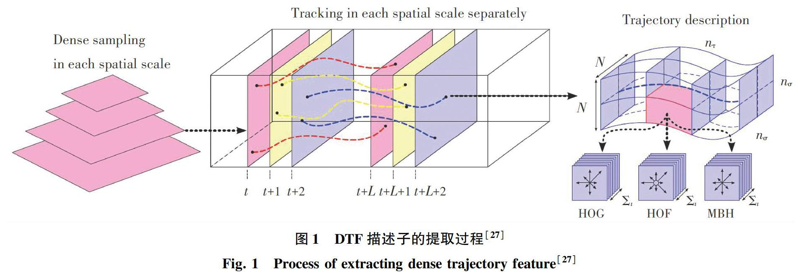
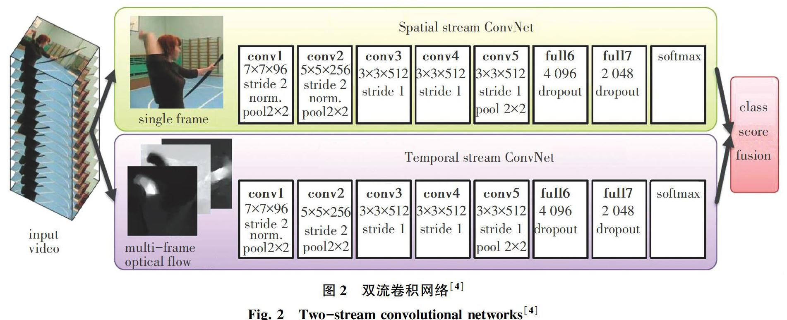
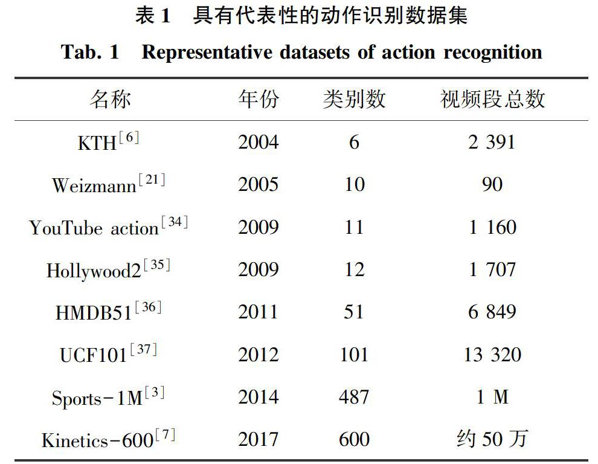

视频中动作识别任务综述
2020-07-04卢修生姚鸿勋
卢修生 姚鸿勋



摘要：随着移动通讯技术的发展，网络上视频数据呈爆炸性增长，对于智能视频分析技术的需求日益增加。随着深度学习技术的应用，视频理解和分析领域近年来得到了快速发展。作为视频分析领域的核心任务，对动作识别的研究不但能够提供更好的视频表达模型，也能够促进其它视频相关任务的进展。在本文中，首先给出了视频中动作识别任务的定义，并区分了短时动作、动作、行为、事件等概念。其次，从传统方法和深度学习方法两方面介绍了动作识别任务的研究进展，其中传统方法又包括了基于全局表示与局部表示的识别方法。最后，介绍了具有代表性的动作识别数据集，并着重阐述了数据集的发展趋势。
关键词： 视频理解; 动作识别; 行为分析; 深度学习
【Abstract】 With the development of mobile communication technology， the online video data is exploding， and the demand for intelligent video analytics is increasing. With the application of deep learning technology， the field of video understanding and analysis has developed rapidly in recent years. As a core task in the field of video understanding， the research on action recognition not only provides better video representation， but also promotes the research of other video-related tasks. In this paper， the definition of action recognition task in videos is given and the four concepts of act， action， behavior， and event are distinguished. Secondly， the research progress of action recognition task is introduced from two aspects： the traditional methods and the deep learning based methods. The traditional methods include the recognition methods based on global representation and local representation. Finally， representative action recognition datasets and the development trend of these datasets are also described.
【Key words】 video understanding; action recognition; event analysis; deep learning
0 引 言
人类社会过去几十年的网络化与数字化使得网络数据呈现爆炸性增长，并逐渐步入了大数据时代[1]。随着移动通讯技术的发展，人们明显能够感受到互联网上传输数据的变化。在2G时代通过手机传输的主要是文本信息，在3G时代图像信息成为移动数据的重要组成部分，而在4G时代长视频、短视频、直播等视频流数据迎来了爆发，并且随着5G技术的革命，高清视频、无人驾驶领域所获取的视频等数据的增多将会进一步加速这一趋势。这些海量的视频数据需要智能视频分析技术的发展。
近年来，随着视觉领域迅猛发展，作为其子领域的研究成果也陆续涌现[2]。在Karpathy等人[3]首次将卷积神经网络用于动作识别任务上后：从理论上来看，双流卷积网络[4]和3D卷积网络[5]等重要工作取得突破，由此创建针对动作识别任务新的神经网络框架;从数据集上来看，从2004年包含2 391段视频的KTH动作数据集[6]到2018年包含大约50万段视频的Kinetics-600数据集[7]的提出，数据集包含视频和动作种类的增加使得训练更深網络成为可能。而在动作识别研究的基础上，对事件检测[8]、动作检测[9]、视频标注[10]乃至视频生成[11]等任务的研究现已成为当下学界的研究热点。
作为视频分析领域的基础任务，对于动作识别的研究有重要的理论和应用价值。本次研究中，首先通过对视频数据的分析和网络模型的设计，能够构建更好的视频表达模型，加深对视频数据的理解;其次，动作识别研究能够为动作检测、事件识别等一系列相关任务提供理论基础;此外，动作识别研究在视频监控、无人驾驶、游戏等领域还有着广阔的应用前景。基于此，本文将会探讨视频中动作识别任务的定义，接下来回顾了近年来动作识别领域的研究进展，最后介绍了一些常用的动作识别公开数据集。
1 视频中动作识别任务的定义
在定义动作识别任务前，先要厘清短时动作（Act）、动作（Action）、行为（Activity）、事件（Event）这四个概念。研究对其并没有严格的定义，主要通过运动时间跨度的长短以及运动的复杂度来进行区分。其中，短时动作是指类似于举手、抬腿、往前走一步等这种时间跨度较短的运动，其实短时动作的概念与汉语中本身的动作概念很相似。动作是一种约定俗成的翻译，是指由多个短时动作组成、时间跨度中等的运动，比如跑步，跳远、骑马等。而行为又是由多个动作组成的、时间跨度较长的运动，比动作更加复杂，是由多个动作按照时间先后，或者按照参与人数组合而成，比如多个人之间的互动、一个人走进屋子又走出去等。事件则是多个动作或者行为的组合，比如一场足球赛，一次交通事故等。在本文中综述的对象是针对动作的识别，而其中提出的一些方法也可以被应用到行为或者事件分类问题中。
在动作识别任务的研究中，除了基于视频的动作识别之外，还有基于静态图像的动作识别、基于深度数据的动作识别等。总地来说，基于静态图像的动作识别一般基于SIFT描述子、HOG描述子、GIST描述子等底层特征或者基于人体[12]、人体部件[13]、与动作相关的物体[14]、人体与物体之间的交互关系[15]等高层信息。但是在静态图像中缺少时域信息，这限制了其动作识别的准确度。基于深度数据的动作识别主要思路之一是构建基于深度图的时空特征，如Oreifej等人[16]提出了HON4D描述子，用直方图来捕获时间、深度、空间坐标组成的四维空间的表面法线方向的分布。但是由于深度数据获取不易，基于深度数据的动作识别在应用上也有其局限性，所以目前基于视频的动作识别是动作识别领域中的主要研究方向。而本文所研究的基于视频的动作识别可以定义为给定动作视频，通过动作识别算法处理后输出视频中动作类别标签的过程。
2 视频中动作识别任务的相关方法
动作识别方法主要可以分为基于传统方法的动作识别和基于深度学习的动作识别两大类，其中基于传统方法的动作识别又可以分为基于全局表示和局部表示的动作识别。对此拟展开研究论述如下。
2.1 基于全局表示的动作识别
与目标识别方法的发展轨迹类似，动作识别方法也是由初期的全局表示逐渐过渡到更鲁棒的局部表示。全局表示是指直接从视频中提取整个人体的某种表示（比如轮廓[17]或者光流[18]等）。在提取全局表示时先要将包含整个人体的感兴趣区域定位出来，再提取感兴趣区域的形状、边缘、光流等特征。全局表示刻画了视频中整个人体的运动情况，包含了全面而丰富的视觉信息，但是其缺点在于因为是在整个人体上提取特征，所以容易受到遮挡、视角变化、背景噪声等影响。
Bobick等人[19]提出的运动能量图（Motion-energy image， MEI）和运动历史图（Motion-history image， MHI）是全局表示中的经典工作。运动能量图中像素值是二值化的，表示的是视频序列中运动发生的位置和观测视角。运动能量图中像素值为标量，值的强度为此位置所发生历史运动的函数，其中运动发生越近的像素值越大。运动能量图和运动历史图组合起来就形成了一个值为向量的特定视角时域模板图，向量的每个元素都是此位置运动信息的函数，这个时域模板也就是视频中动作的全局表示。
运动能量图和运动历史图都是针对于特定视角的表示，对于动作的视角变化比较敏感。为了解决这个问题，多摄像机被用来采集不同视角的动作信息。在此基础上，Weinland等人[20]基于只考虑围绕人体中心垂直坐标轴的视角变化的假设，将运动历史图等二维运动模板拓展到三维并提出了运动历史量（Motion-history volume， MHV）表示，随后在圆柱坐标系下将傅里叶变换作用于运动历史量从而得到了对于位置和旋转具有不变性的最终表示。
前述研究得到的全局表示都是一种二维图结构，而视频是由多帧图像组成的序列，这些图像沿时间维组合起来就会形成包括两个空间维和一个时间维的三维时空结构。Blank等人[21]提取时空结构中动作的时空形状（Space-time shape）来表示这些动作。相较于二维形状，这些时空形状一方面包含了人体姿态的空间信息（比如躯干的位置和方向），另一方面则包含了动态信息（比如身体运动以及四肢相对于身体的运动）。在得到时空形状之后再利用泊松方程解的性质来提取时空特征，比如局部时空显著性、动作动态、形状的结构和方向等后，将这些局部特征以加权平均的形式转化为全局特征。Yilmaz等人[22]提出了另一种利用三维时空量的方法，研究中先通过使用一个两步图理论方法来解决相邻帧中轮廓的对应问题从而生成三维时空量（Spatio-temporal volume， STV），再分析时空量表面的微分几何特性来得到动作描述子，而这些描述子的集合就构成了对于摄像机具有视角不变性的动作草图（Action sketch）特征，最终这些视角不变特征被用于进行动作分类。
2.2 基于局部表示的动作识别
不同于全局表示提取了整个人体的轮廓、运动等信息，局部表示更关注视频中感兴趣的局部区域，并在这些区域中提取局部描述子来刻画人体动作。与图像中目标识别的过程类似，计算视频局部特征的步骤一般为先使用感兴趣点检测子（如Harris等人[23]）或者密集采样的方式来采样视频中的局部时空区域，而后在这些局部区域上计算3D SIFT等局部特征。与全局表示相比较，局部表示对视频中的遮挡、视角变化等问题更加鲁棒。
Laptev[24]提出的动作识别方法是局部表示发展初期的重要工作。研究中，先将空间感兴趣点的概念拓展到时空域，基于Harris感兴趣点算子来检测图像帧的像素值在空间和时间方向上具有显著局部变化的局部时空结构，也就是所谓的时空感兴趣点（Space-time interest points， STIPs）。然后通过最大化在时空尺度上归一化的时空拉普拉斯算子来估计所检测到动作的时空范围，以此来实现特征的尺度自适应。最后在时空感兴趣点邻域内提取局部时空尺度不变的N-射流特征，并基于射流特征进行动作分类。之后动作识别领域局部表示的发展主要遵循2个思路，一是将图像领域常用的二维描述子直接推广到三维，比如3D SIFT描述子[25]、HOG3D描述子[26]等;二是将空域信息和时域信息分开来处理，空域信息由视频帧得到，时域信息由光流帧得到，也就是说将时域上的运动信息由光流信息来代替。
Wang等人提出了基于密集轨迹的DTF描述子[27]和其改进版本iDT描述子[28]，这2个描述子都采用了空域信息和时域信息分开处理的思路，是基于局部表示的动作识别方法的集大成之作，其中DTF描述子的提取过程如图1所示。当计算DTF描述子时，在对各帧进行密集采样后，通过密集光流场得到的位移信息来对采样点进行跟踪。假设跟踪L帧，那么就在这L帧轨迹的时空邻域內提取HOG、HOF和MBH描述子。其中，HOG和HOF描述子通过对梯度和光流的统计分别刻画了视频中的表观和运动信息。而MBH描述子是由Dalal等人[29]在人体检测任务中提出的运动边界直方图描述子，在本质上刻画了光流场的水平分量和垂直分量的梯度信息。与HOF描述子相比，MBH描述子在一定程度上抑制了背景中的相机运动造成的干扰同时突出了前景的运动，所以HOG、HOF和MBH这三种描述子能够起到很好的互补作用。
2.3 基于深度学习的动作识别
在深度学习前，动作识别领域已经有一些基于浅层神经网络的工作。比如Le等人[30]将独立子空间分析算法（ISA）进行拓展，并从无标签的视频数据中学习得到不变的时空特征。而Karpathy等人[3]首次将融入了数据增强、ReLU激活函数、Dropout方法等现代神经网络技巧的卷积神经网络模型应用到动作识别领域。研究过程中先将以单视频帧作为输入的卷积网络作为基准网络，并将卷积网络中的连接拓展到时域、从而提出了早融合、晚融合、慢融合等多种框架来利用视频帧间的局部时空信息。
从如何处理视频中时空信息的角度，基于深度学习的动作识别方法可以分为2种。一种是基于双流卷积网络框架[4]，如图2所示。该研究的核心思想使用空间流网络和时间流网络来分开处理视频中的空域和时域信息，其中空间流网络的输入为视频帧，时间流网络的输入为光流帧，双流卷积网络延续了局部表示中将空域信息和时域信息分开处理的思路。Feichtenhofer等人[31]在双流卷积网络的基础上探索了多种空域和时域的信息融合方式。在空间信息融合方面，比较了加和、取最大值、连接、卷积、双线性等多种融合方式;在融合位置方面，比较了单层融合和多层融合等不同融合位置;在时间信息融合方面，探讨了3D卷积和3D池化的作用。Wang等人[32]则将稀疏采样策略与双流卷积网络相结合提出了时域分割网络，来对视频中长时时域结构进行建模。
另一种基于深度学习的动作识别方法是基于三维卷积神经网络框架[5]，其思想在于将视频作为时空立方体来处理，即将空域上的2D卷积操作增加时间维自然拓展到时空域的3D卷积操作。三维卷积神经网络框架与局部表示中将二维描述子直接拓展到三维的思路相一致。三维卷积网络较大的参数量限制了可训练网络的层数，针对此问题Qiu等人[33]使用了空域上的3*3*1卷积和时域上的1*1*3卷积组成的P3D模块来近似3*3*3时空卷积，并提出了P3D ResNet网络，这样就在模型略小于C3D网络[5]的同时构建了极深的卷积网络。
3 具有代表性的动作识别数据集
回顾近年来动作识别数据集的变化，在动作表现上从演员表演到越来越贴近自然条件，在动作种类上从几类发展到数百类动作，在视频数据量上从几百发展到百万量级视频，动作数据集的快速发展促使了动作识别方法的不断进步。近年来一些具有代表性的动作识别数据集见表1。
在动作识别研究的初期识别算法尚未成熟，所以只能分类一些简单的动作，制作的数据集一般是由研究人员设计好动作、场景后招募演员来进行表演，这一时期比较著名的数据集有KTH和Weizmann数据集等。KTH数据集[6]中研究者设计了走路、慢跑、跑步、拳击、挥手、拍手等6种单人动作，室外、室外带有尺度变化、室外带有服饰变化、室内等4种场景，分别由25个表演者表演而成，总共包含了600个视频，经过时间段划分后得到2 391个序列。Weizmann数据集[21]中则包含了跑步、走路、向前双腿跳、原地双腿跳、挥动双手、挥动单手等10类动作，由9个表演者表演而成，所以一共包含了90个低分辨率180*144的视频。
随着动作识别算法的发展初期数据集已经难以满足需求，研究人员就转向研发互联网上的视频以及电影中包含着的大量动作片段，与初期的数据集相比则更加贴近自然条件下的动作，比如常常包含相机运动、遮挡与视角变换、杂乱背景等，这一时期较为知名的有YouTube action与Hollywood2数据集等。其中，YouTube action数据集[34]来源于YouTube网站上的一些在非受控条件下采集的视频，包含投篮、骑自行车、跳水、颠球等11类动作，数据集中一共包含了大约1 160段视频。Hollywood2数据集[35]是从69部电影中采集得到的视频片段，在内容上包含了一个动作数据集和一个场景数据集。在动作数据集中共有12类动作，包括接电话、握手、拥抱、接吻等有较为复杂语意的动作，总共有1 707段有干净动作标签的视频。
由于YouTube action与Hollywood2数据集中包含的动作种类有限，就使其不再适用于训练和评估更新的识别算法。随即在2010年后相继推出了动作识别领域最具有影响力的2个数据集，即：HMDB51和UCF101数据集，这两个数据集不但包括更多类动作，而且由于相机运动、光照条件、视角和尺度、目标表观和姿态等变化所带来的类内差距使其充满挑战。其中，HMDB51数据集[36]内的动作視频主要来自于电影，少部分来自于YouTube和Google上面的视频。整个数据集包括6 849段视频，共有51类动作并且每类动作至少包含101段视频。UCF101数据集[37]是从YouTube网站上采集得来，包含着101类动作，共有13 320个视频。
随着深度学习的进一步发展，HMDB51和UCF101数据集等以万为量级的视频量不能满足深度网络训练的需求，因而Sports-1M与Kinetics-600这两个十万乃至百万量级的数据集应运而生。Sports-1M数据集[3]是第一个大规模的动作识别数据集，包含了多达1 M的YouTube视频，共有487个动作类别，每类有1 000～3 000个视频。Kinetics-600数据集[7]最初提出时包含400类动作类型，后来又扩展到600类，每类动作包括至少600个视频，整个数据集拥有大约50万个视频片段。
4 结束语
视频中动作识别任务是视频理解领域的核心任务，对其进行研究能够深化研究者对于视频数据的认识，为事件检测、视频标注等视频任务提供指导，并且在智能安防、暴恐检测等领域具有巨大的应用价值。在本文中，先阐述了视频中动作识别任务的简要定义，继而梳理了动作识别任务的研究进展，最后给出了相关的动作识别公开数据集。本文希望通过对动作识别任务的综述为视频领域相关及后续研究发挥有益的参考与借鉴作用。
參考文献
[1] CHEN M， MAO S， LIU Y. Big data： A survey[J]. Mobile networks and applications， 2014， 19（2）： 171.
[2] POPPE R. A survey on vision-based human action recognition[J]. Image and vision computing， 2010， 28（6）： 976.
[3]KARPATHY A， TODERICI G， SHETTY S， et al. Large-scale video classification with convolutional neural networks[C]//Proceedings of the IEEE conference on Computer Vision and Pattern Recognition. Wachingtm DC：IEEE， 2014： 1725.
[4]SIMONYAN K， ZISSERMAN A. Two-stream convolutional networks for action recognition in videos[J]. Computational Linguistics， 2014，1（4）： 568.
[5]TRAN D， BOURDEV L， FERGUS R， et al. Learning spatiotemporal features with 3d convolutional networks[C]//Proceedings of the IEEE International Conference on Computer Vision. Santiago， Chile：IEEE， 2015： 4489.
[6]SCHLDT C， LAPTEV I， CAPUTO B. Recognizing human actions： A local SVM approach[C]//Proceedings of the 17th International Conference on Pattern Recognition（ICPR 2004）. Cambridge， UK ：IEEE， 2004： 32.
[7]KAY W， CARREIRA J， SIMONYAN K， et al. The kinetics human action video dataset[J]. arXiv preprint arXiv：1705.06950， 2017.
[8]XU Z， YANG Y， HAUPTMANN A G. A discriminative CNN video representation for event detection[C]//Proceedings of the IEEE Conference on Computer Vision and Pattern Recognition. Boston：IEEE， 2015： 1798.
[9]PENG X， SCHMID C. Multi-region two-stream R-CNN for action detection[C]//European Conference on Computer Vision. Cham： Springer， 2016： 744.
[10]GAO L， GUO Zhao， ZHANG Hanwang， et al. Video captioning with attention-based LSTM and semantic consistency[J]. IEEE Transactions on Multimedia， 2017， 19（9）： 2045.
[11]TULYAKOV S， LIU Mingyu， YANG Xiaodong， et al. MoCoGAN： Decomposing motion and content for video generation[C]//Proceedings of the IEEE Conference on Computer Vision and Pattern Recognition. Salt Lake City： IEEE， 2018： 1526.
[12]IKIZLER N， CINBIS R G， PEHLIVAN S， et al. Recognizing actions from still images[C]//2008 19th International Conference on Pattern Recognition.Anchorage， Alaska： IEEE， 2008： 1.
[13]YANG W， WANG Y， MORI G. Recognizing human actions from still images with latent poses[C]//2010 IEEE Computer Society Conference on Computer Vision and Pattern Recognition.San Francisco， CA：IEEE， 2010： 2030.
[14]LI Lijia， LI Feifei. What， where and who？ classifying events by scene and object recognition[C]//2007 IEEE 11th International Conference on Computer Vision. Rio de Janeiro， Brazil：IEEE，2007： 1.
[15]DESAI C， RAMANAN D， FOWLKES C. Discriminative models for static human-object interactions[C]//2010 IEEE Computer Society Conference on Computer Vision and Pattern Recognition-Workshops. San Francisco， CA， USA ：IEEE， 2010： 9.
[16]OREIFEJ O， LIU Z. Hon4d： Histogram of oriented 4d normals for activity recognition from depth sequences[C]//Proceedings of the IEEE Conference on Computer Vision and Pattern Recognition. Portland， Oregon， USA：IEEE，2013： 716.
[17]VEERARAGHAVAN A， CHOWDHURY A R， CHELLAPPA R. Role of shape and kinematics in human movement analysis[C]//Proceedings of the 2004 IEEE Computer Society Conference on Computer Vision and Pattern Recognition， 2004（ CVPR 2004）. Washington DC， USA：IEEE， 2004： 1730.
[18]EFROS A A， BERG A C， MORI G， et al. Recognizing action at a distance[C]//Proc. International Conference on Computer Vision. Nice， France：IEEE， 2003： 726.
[19]BOBICK A F， DAVIS J W. The recognition of human movement using temporal templates[J]. IEEE Transactions on Pattern Analysis & Machine Intelligence， 2001，23 （3）： 257.
[20]WEINLAND D， RONFARD R， BOYER E. Free viewpoint action recognition using motion history volumes[J]. Computer Vision and Image Understanding， 2006， 104（2-3）： 249.
[21]BLANK M， GORELICK L， SHECHTMAN E， et al. Actions as space-time shapes[C]// Proceedings of the IEEE International Conference on Computer Vision. Beijing， China：Institute of Electrical and Electronics Engineers Inc， 2005， 2： 1395.
[22]YILMAZ A， SHAH M. Actions as objects： A novel action representation[C]//Proc. IEEE Conference on Computer Vision and Pattern Recognition. San Diego， California：IEEE， 2005：984.
[23]HARRIS C G， STEPHENS M. A combined corner and edge detector[C]//Proceedings of 4th Alvey Vision Conference.Alvey， UK：[s.n.]， 1988， 15（50）： 10.
[24]LAPTEV I. On space-time interest points[J]. International Journal of Computer Vision， 2005， 64（2-3）： 107.
[25]SCOVANNER P， ALI S， SHAH M. A 3-dimensional sift descriptor and its application to action recognition[C]//Proceedings of the 15th ACM International Conference on Multimedia. Augsburg， Germany：ACM， 2007： 357.
[26]KLASER A， MARSZAEK M， SCHMID C. A spatio-temporal descriptor based on 3D-gradients[C]//BMVC 2008 19th British Machine Vision Conference. Leeds， UK：British Machine Vision Association， 2008： 275.
[27]WANG H， KLSER A， SCHMID C， et al. Action recognition by dense trajectories[C]//IEEE Conference on Computer Vision & Pattern Recognition（CVPR 2011）. Colorado Springs， Colorado， USA：IEEE， 2011： 3169.
[28]WANG H， SCHMID C. Action recognition with improved trajectories[C]//Proceedings of the IEEE International Conference on Computer Vision. Sydney， NSW， Australia：IEEE， 2013： 3551.
[29]DALAL N， TRIGGS B， SCHMID C. Human detection using oriented histograms of flow and appearance[M]//LEONARDIS A， BISCHOF H， PINZ A. Computer Vision-ECCV 2006. ECCV 2006. Lecture Notes in Computer Science. Berlin/Heidelberg：Springer， 2006，3952：428.
[30]LE Q V， ZOU W Y， YEUNG S Y， et al. Learning hierarchical invariant spatio-temporal features for action recognition with independent subspace analysis[C]//IEEE Conference on Computer Vision and Pattern Recognition. Washington， D.C：IEEE Computer Society， 2011：3361.
[31]FEICHTENHOFER C， PINZ A， ZISSERMAN A. Convolutional two-stream network fusion for video action recognition[C]//Proceedings of the IEEE Conference on Computer Vision and Pattern Recognition（CVPR）. Las Vegas， NV， USA：IEEE， 2016： 1933.
[32]WANG Limin， XIONG Yuanjun， WANG Zhe， et al. Temporal segment networks： Towards good practices for deep action recognition[C]//European Conference on Computer Vision. Cham：Springer， 2016： 20.
[33]QIU Zhaofan， YAO Ting， MEI Tao. Learning spatio-temporal representation with pseudo-3D residual networks[C]//Proceedings of the IEEE International Conference on Computer Vision. Venice， Italy：IEEE， 2017： 5533.
[34]LIU Jingen， LUO Jiebo， SHAH M. Recognizing realistic actions from videos in the wild[C]// 2009 IEEE Computer Society Conference on Computer Vision and Pattern Recognition （CVPR 2009）. Miami， Florida， USA：IEEE，2009：1.
[35]MARSZAEK M， LAPTEV I， SCHMID C. Actions in context[C]//IEEE Conference on Computer Vision & Pattern Recognition（CVPR 2009）. Miami Beach， Florida：IEEE Computer Society， 2009： 2929.
[36]KUEHNE H， JHUANG H， GARROTE E， et al. HMDB： A large video database for human motion recognition[C]//2011 IEEE International Conference on Computer Vision. Barcelone， Spain：IEEE， 2011： 2556.
[37]SOOMRO K， ZAMIR A R， SHAH M. UCF101： A dataset of 101 human actions classes from videos in the wild[J]. arXiv preprint arXiv：1212.0402， 2012.